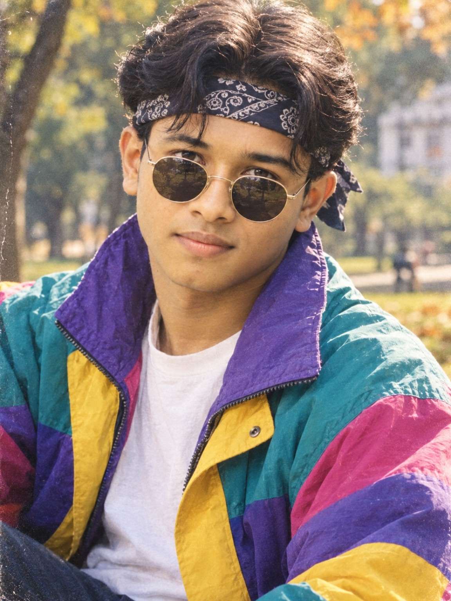
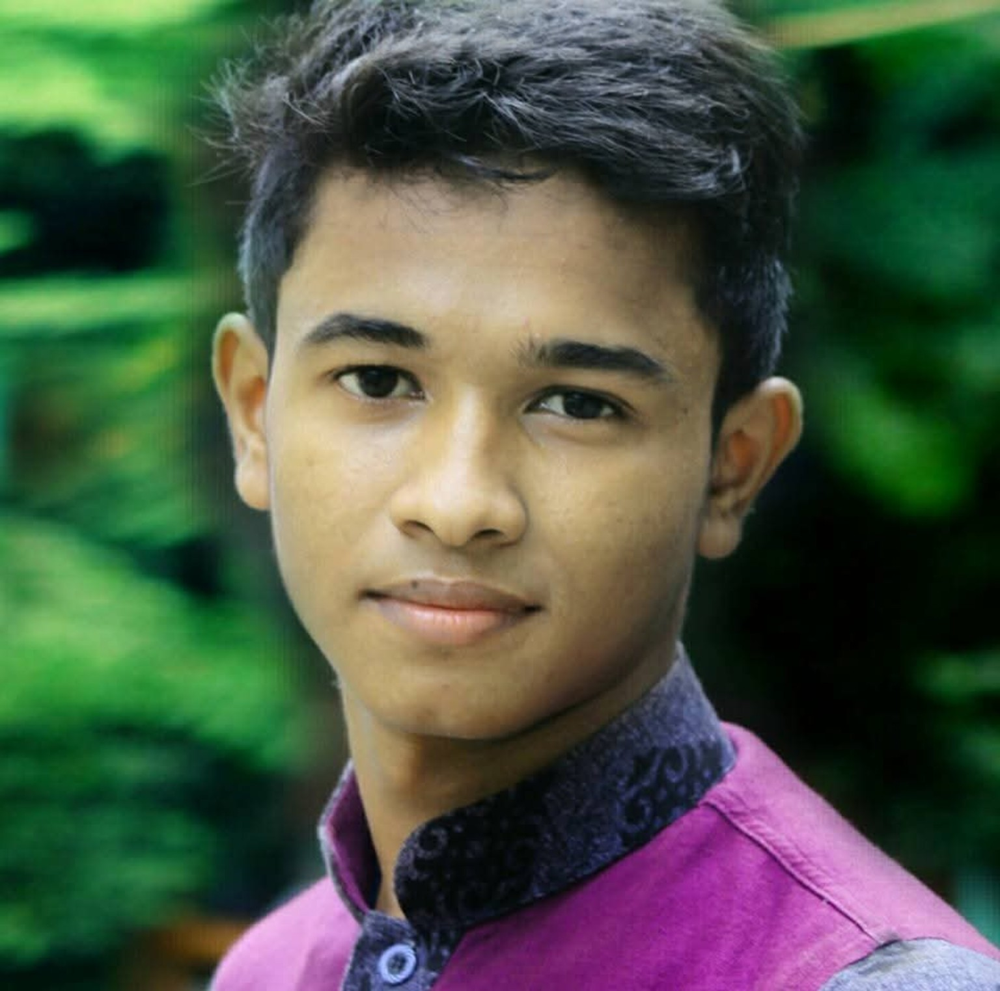
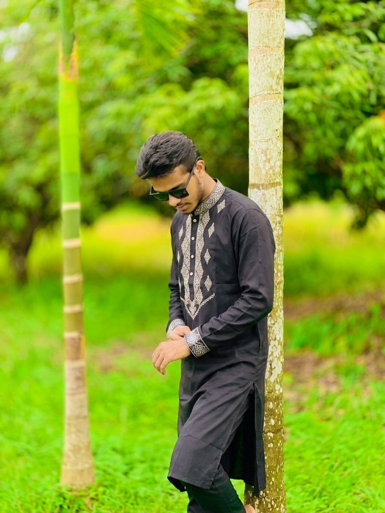
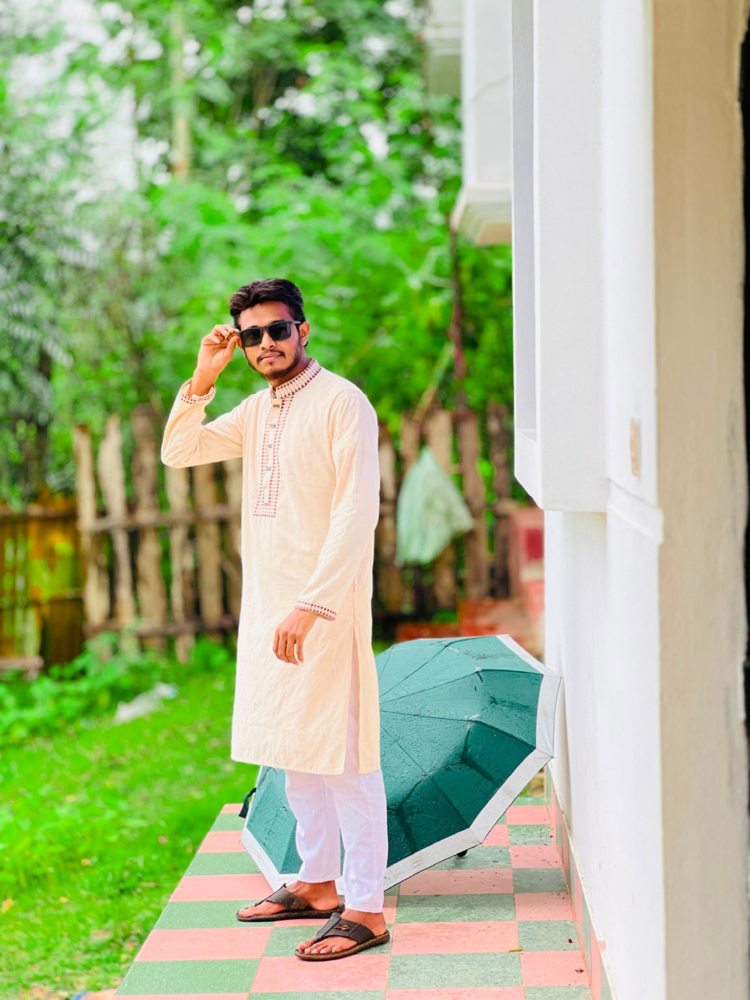
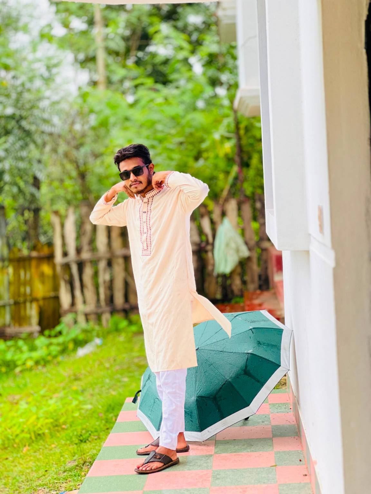
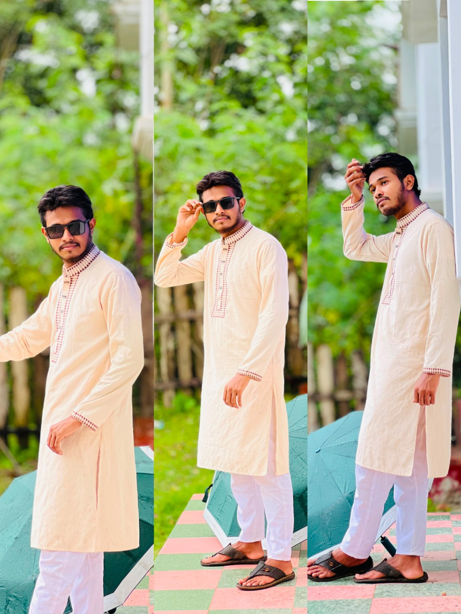
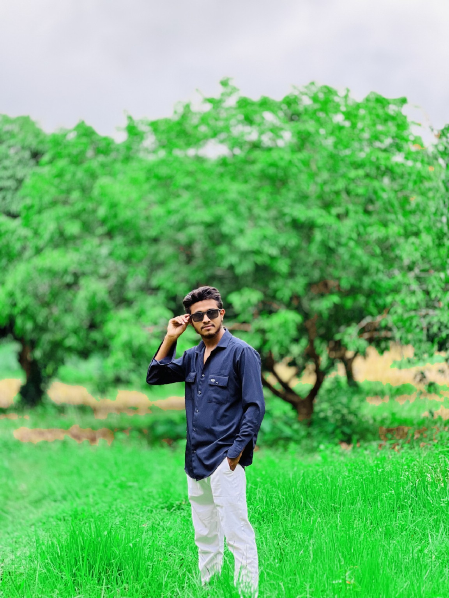
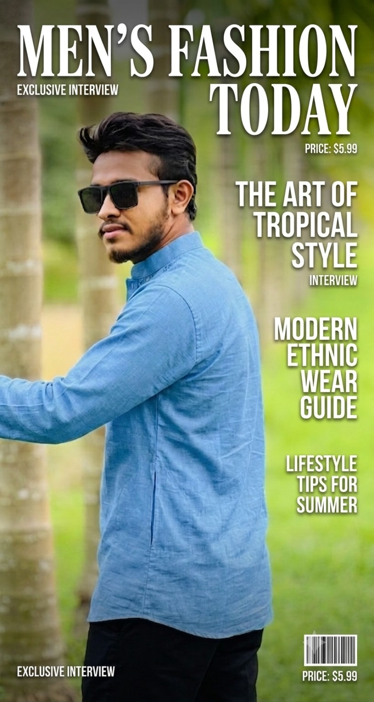
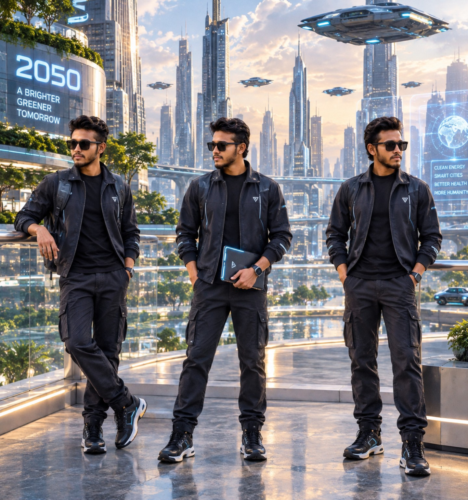
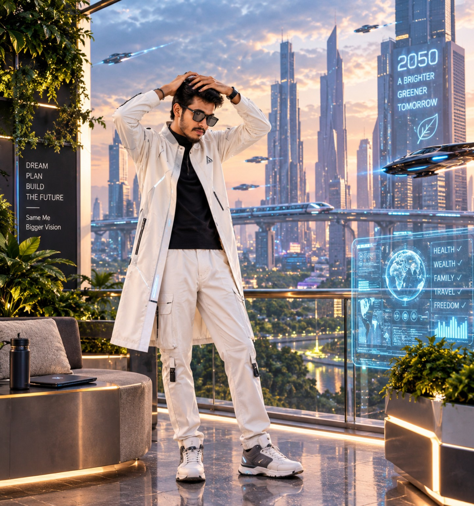

Use soft light
Morning, late afternoon or open shade usually gives a more flattering portrait.
CHITTAGONG · BANGLADESH
A personal portrait collection from Chittagong — exploring style, expression, traditional wear and creative photography.

ABOUT
Welcome to the official personal photo page of Md Forhad Aziz from Chittagong (Chattogram), Bangladesh. This site collects portraits, men's fashion looks, traditional outfits and creative photo concepts.
PHOTO COLLECTION
Portraits · Traditional wear · Fashion · Creative concepts









PHOTOGRAPHY
Morning, late afternoon or open shade usually gives a more flattering portrait.
Give the subject room around the head and body so the image feels natural.
Small changes in eye direction, shoulders and hands can make a photo feel much more confident.
ABOUT THIS PAGE
This page is built around Md Forhad Aziz's own photography collection from Chittagong. Search engines may index these photos over time, but search rankings and image results are controlled by the search engine and cannot be guaranteed.